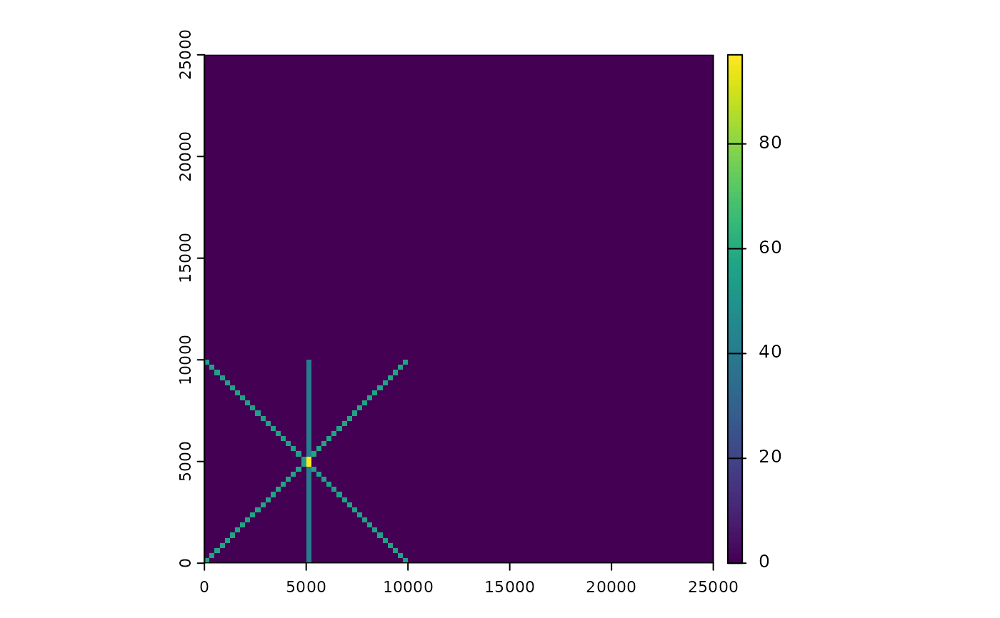

Rasterize line density in meters per hectare.
Arguments
- x
an sf object containing lines and/or points
- r
a SpatRaster or RasterLayer object to be used as a template for the output raster
- ptDensity
a number giving the density to assign to points, in units of
res(r). A value of 1 indicates one straight line crossing of the pixel. A value of 2+2*2^0.5 is horizontal, vertical, and diagonal crossings. If NULL, points in x will be ignored.
See also
Caribou habitat functions:
CaribouHabitat-class,
calcBinaryUse(),
caribouHabitat(),
coefTableHR,
coefTableStd,
fnlcToResType,
loadSpatialInputs(),
plcToResType,
reclassPLC(),
resTypeCode,
results(),
rfuToResType,
threshTable,
updateCaribou()
Examples
# create example raster
lc <- terra::rast(xmin = 0, xmax = 25000, ymin = 0, ymax = 25000,
resolution = 250, crs = "EPSG:5070")
#' # create line
lf <- sf::st_as_sf(sf::st_sfc(list(sf::st_linestring(matrix(c(0, 0, 10000, 10000),
ncol = 2, byrow = TRUE)),
sf::st_linestring(matrix(c(1, 10001, 10001, 1),
ncol = 2, byrow = TRUE)),
sf::st_linestring(matrix(c(5001, 10001, 5001, 1),
ncol = 2, byrow = TRUE))),
crs = 5070))
rastLines <- rasterizeLineDensity(lf, lc)
plot(rastLines)
